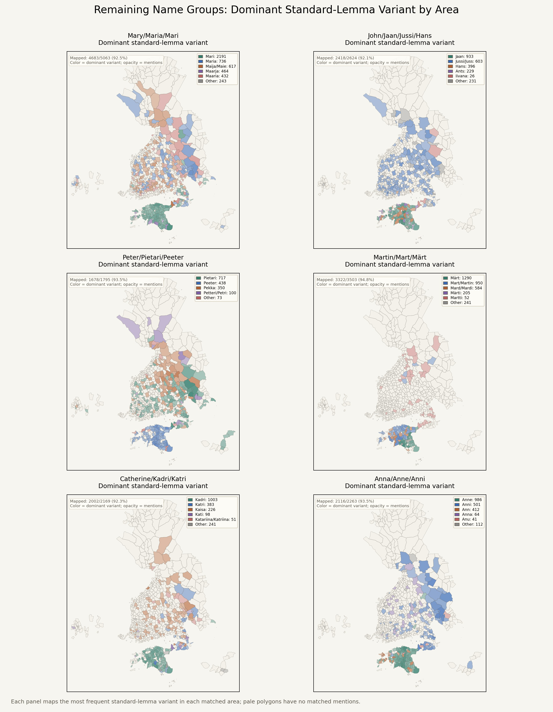

Name Variant Area Maps
Dominant standard-lemma variant by mapped area, using areas.geojson polygons.
Overview
Jesus / Christ
Mary / Maria / Mari
John / Jaan / Jussi
Peter / Pietari
Martin / Mart / Märt
Catherine / Kadri
Anna / Anne / Anni
